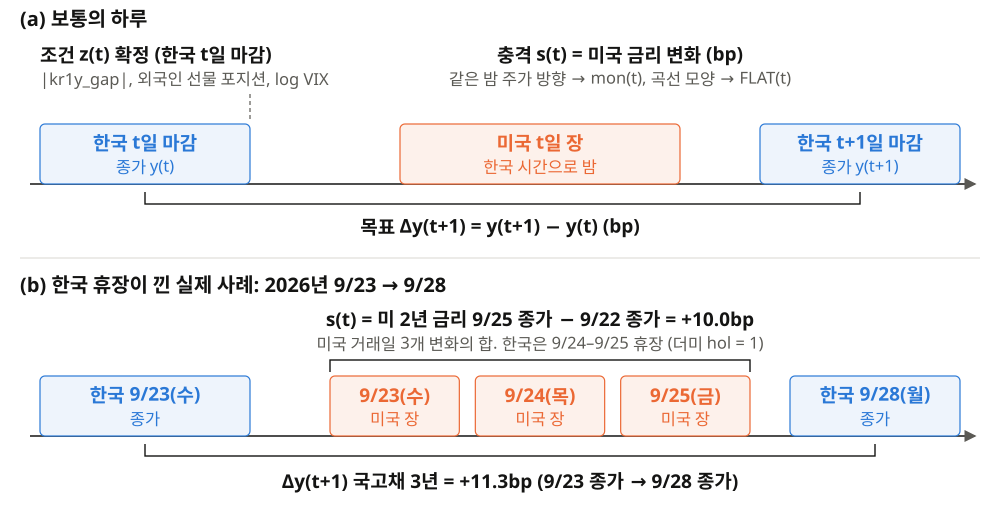
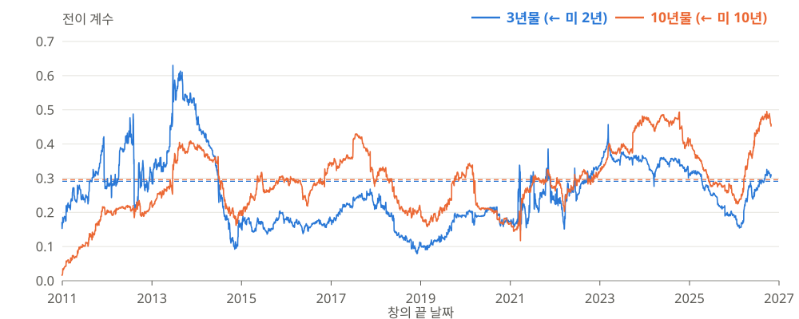
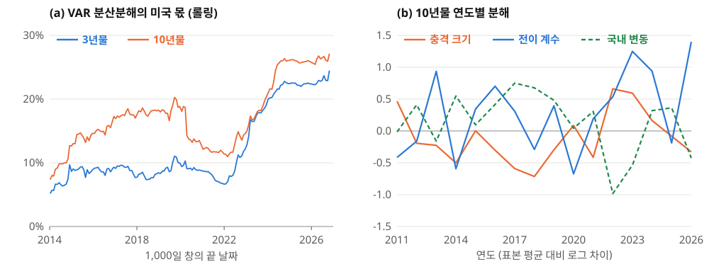

Bigger Shocks or Stronger Transmission? The Rising U.S. Share in Korean Government Bond Yields
금융계량경제학 기말 프로젝트 · 팀 ○ · ○○○, ○○○, ○○○ · 2026년 12월
초록. 국고채 금리의 하루 변동 가운데 간밤 미국 국채 금리 충격이 설명하는 몫이 커졌다. 2010–2026년 일별 자료(4,140개 한국 거래일 쌍)로 보면, 미국 충격과 한국 고유 변동을 합한 분산 중 미국 몫은 2010–2019년 4%(3년물)·11%(10년물)에서 2020–2026년 18%·20%로 늘었다. VAR 분산분해도 같은 변화를 보인다. 이 몫은 미국 충격이 커져도, 1bp당 전이가 커져도, 한국 고유 변동이 작아져도 늘어난다. 우리는 분산 비율의 로짓을 세 요인으로 정확히 나누고, 결과를 보기 전에 정한 가설을 블록 부트스트랩과 Holm 보정으로 검정했다. 두 만기 모두 미국 충격이 커졌고(3년물 짝인 미국 2년물의 분산은 네 배), 1bp당 전이도 0.20–0.23에서 0.33–0.37로 커졌다. 한국 고유 변동은 오히려 커져 몫의 증가를 일부 상쇄했다. 10년물에서는 전이 강화의 기여가 충격 확대보다 컸고, 3년물에서는 충격 확대의 기여가 더 컸지만 그 차이는 유의하지 않았다. 같은 크기의 충격이 언제 더 넘어오는지도 함께 검정했다. 미리 정한 시장 조건(정책 기대, 외국인 선물 포지션, 위험회피)은 전이를 키우지 않았고, 미국 금리와 주가가 반대로 움직인 통화정책형 충격은 10년물로 더 넘어왔다. 미국 정보는 표본 밖 변동성 예측과 VaR를 개선하지 못했다. 국고채의 미국 의존이 커진 것은 미국 변동성이 커진 국면 탓만이 아니라 연계 자체가 강해진 결과다.
주제어: 금리 전이, 국고채, 분산 비율, 블록 부트스트랩, VAR, GARCH
Abstract. The share of daily Korean government bond yield variation explained by overnight U.S. Treasury shocks has risen. Using daily data from 2010 to 2026 (4,140 pairs of Korean trading days), the U.S. share of the variance attributable to U.S. shocks and Korea-specific movements rose from 4% (3-year) and 11% (10-year) in 2010–2019 to 18% and 20% in 2020–2026, and a VAR variance decomposition shows the same shift. The share can rise because U.S. shocks became larger, because pass-through per basis point became stronger, or because Korea-specific variation shrank. We decompose the logit of the variance ratio exactly into these three parts and test pre-registered hypotheses with a moving block bootstrap and Holm correction. At both maturities U.S. shocks became larger (the variance of the 2-year U.S. yield change quadrupled) and pass-through rose from 0.20–0.23 to 0.33–0.37, while Korea-specific variance also rose and partly offset the increase. For the 10-year yield, stronger pass-through contributed more than larger shocks; for the 3-year yield larger shocks contributed more, but not significantly so. Pre-specified market conditions (policy expectations, foreign futures positioning, risk aversion) do not amplify pass-through, monetary-type shocks pass through more to the 10-year yield, and U.S. information does not improve out-of-sample volatility forecasts or Value-at-Risk. Korea's rising dependence on U.S. yields reflects a stronger link, not only a more volatile U.S. regime.
Keywords: interest rate spillovers, Korean government bonds, variance ratio, block bootstrap, VAR, GARCH
국고채 금리는 점점 더 미국을 따라 움직인다. 한국은행(2024)은 2022년 이후 글로벌 긴축기에 미국 국채 금리가 국내 장기 금리에 미치는 영향이 커졌다고 분석했다. 우리 자료에서도 국고채 금리의 하루 변동 가운데 간밤 미국 국채 금리 충격이 설명하는 몫은 2010년대에 비해 2020년대에 두세 배 커졌다. 그런데 이 사실만으로는 무엇이 변했는지 알 수 없다. 미국 몫이 커지는 길은 셋이다. 미국 금리 충격 자체가 커졌을 수 있고, 같은 1bp 충격이 더 많이 넘어오게 됐을 수 있고, 한국 고유의 변동이 작아졌을 수 있다.
세 경로의 함의는 다르다. 충격이 커진 것이라면 이는 2022년 이후 연준의 급격한 긴축이 만든 미국 변동성 국면의 문제이고, 미국 변동성이 가라앉으면 몫도 줄어든다. 전이가 강해진 것이라면 한국 채권시장이 미국 시장과 더 깊이 연결됐다는 뜻이고, 미국 변동성이 줄어도 연계는 남는다. 한국 고유 변동이 작아진 것이라면 국내 정책·수급 요인의 역할이 약해진 것이다. 정책 당국이 대외 충격에 대비할 때나 투자자가 국고채의 미국 위험을 잴 때, 셋 중 무엇인지에 따라 대응이 달라진다.
이 연구는 이 질문에 답한다. 2010–2026년 일별 자료에서 한국 종가 기준으로 시점을 맞추고, 미국 충격이 다음 날 국고채 금리를 움직이는 기준 회귀에서 미국 충격으로 설명되는 분산의 몫(분산 비율; Bekaert and Harvey 1997, Ng 2000)을 구한다. 분산 비율의 로짓은 전이 계수, 미국 충격 분산, 한국 고유 분산의 세 항으로 정확히 나뉜다. 2010–2019년과 2020–2026년 사이의 변화를 이 세 항으로 분해하고, 각 기여에 대한 가설을 결과를 보기 전에 정해 이동 블록 부트스트랩(Künsch 1989)과 Holm 보정으로 검정한다. 같은 변화를 VAR 분산분해와 GARCH 조건부 분산으로도 확인한다.
결과는 다음과 같다. 미국 몫은 두 만기 모두 유의하게 커졌다(3년물 4% → 18%, 10년물 11% → 20%). 세 경로 중 두 개가 함께 작용했다. 미국 충격이 커졌고, 특히 3년물의 짝인 미국 2년물 금리 변화의 분산은 제로 금리 하한에 묶였던 2010년대 초반에 비해 네 배가 됐다. 동시에 1bp당 다음 날 전이도 0.20–0.23에서 0.33–0.37로 커졌다. 한국 고유 변동은 오히려 커져 몫의 증가를 일부 상쇄했다. 10년물에서는 전이 강화가 충격 확대보다 큰 기여를 했고, 3년물에서는 충격 확대의 기여가 더 컸지만 둘의 차이는 유의하지 않았다. 따라서 국고채의 미국 의존이 커진 것을 미국 변동성 국면만으로 설명할 수는 없다.
전이 계수가 커졌다면 같은 크기의 충격은 언제 더 넘어오는가. 이 질문은 이 연구의 처음 설계였고, 결과를 그대로 보고한다. 결과를 보기 전에 정한 세 시장 조건(정책 기대, 외국인 국채선물 포지션, 위험회피)은 전이를 키우지 않았고, 10년물에서는 오히려 줄이는 방향이었다. 반면 미국 금리와 주가가 반대로 움직인 통화정책형 충격(Hoek, Kamin and Yoldas 2022)은 10년물로 더 많이 넘어온다. 미국 충격은 다음 날 국고채 변동성도 키우지만, 미국 정보로 표본 밖 변동성 예측이나 VaR가 나아지지는 않았다.
이 연구의 기여는 세 가지다. 첫째, 국고채에서 커진 미국 몫을 충격 크기, 전이 강도, 국내 변동의 세 요인으로 정확히 분해하고 각 기여를 검정한다. 연계가 "강해졌다"는 기존 서술을 충격이 커진 것과 전이가 강해진 것으로 나눠 보인다. 둘째, 수업에서 다룬 시계열 모형(VAR 분산분해, GARCH, 구조변화 검정, 부트스트랩, 표본외 예측과 VaR)으로 같은 질문을 여러 각도에서 확인한다. 셋째, 모든 가설을 분석 전에 문서로 고정하고, 지지되지 않은 가설도 다중검정 보정 뒤 그대로 보고한다.
이후 구성은 다음과 같다. 2절은 선행연구, 3절은 자료와 시점 정렬, 4절은 방법을 설명한다. 5절은 결과로, 5.1–5.2절이 미국 몫과 그 분해, 5.3절이 전이 계수를 가르는 조건과 충격 성격, 5.4절이 변동성과 위험관리다. 6절은 견고성, 7절은 결론과 한계다.
미국 금리의 국제 전이. 미국 통화정책과 국채 금리가 다른 나라 금리로 강하게 전이된다는 것은 잘 알려져 있다. Gilchrist, Yue and Zakrajšek(2019)은 미국 통화정책이 각국 국채 금리에 크게 넘어가고 완화와 긴축의 반응이 대칭임을 보였다. 이는 우리 기준 모형에서 상승·하락 충격의 전이가 같다는 결과와 맞는다. Albagli et al.(2019)은 미국 통화정책 충격이 신흥국 장기 금리로는 주로 기간 프리미엄을 통해 넘어간다고 보고했다. Kearns, Schrimpf and Xia(2023)는 47개국 자료에서 금융 개방도가 전이 크기를 가장 잘 설명한다는 것을 보였다. 전이 강도가 나라와 시기에 따라 다르다는 연구도 있다. Miranda-Agrippino and Rey(2020)는 미국 통화정책이 위험자산 가격의 글로벌 요인을 움직인다고 보였고, Kalemli-Özcan(2019)은 신흥국이 위험 프리미엄 때문에 미국 통화정책에 더 민감하다고 주장했다. 반대로 Miyajima, Mohanty and Chan(2012)은 2008년 이후 신흥국 현지통화 국채가 위험회피 국면에 안전자산처럼 움직이기도 한다고 보고했다.
미국 몫을 재는 방법. 한 시장의 변동 가운데 외부 충격이 설명하는 몫은 분산 비율로 잰다. Bekaert and Harvey(1997)와 Ng(2000)는 지역·세계 충격의 계수와 조건부 분산으로 신흥국 주식시장 수익률 분산 중 외부 충격의 몫을 구했고, Baele(2005)와 Christiansen(2007)은 같은 방법을 유럽 주식·채권시장에 적용해 통합이 진행되며 그 몫이 커졌음을 보였다. Diebold and Yilmaz(2009)는 VAR 예측오차 분산분해로 시장 사이의 방향별 전이를 요약했다. 분산 비율은 외부 충격의 계수와 분산이 모두 커질 때 커지는데, 이들 연구는 몫이 커졌다는 사실과 그 원인을 따로 검정하지는 않았다. 우리는 몫의 변화를 계수, 충격 분산, 국내 분산의 기여로 나눠 검정한다. 충격 분산이 시기마다 크게 다를 수 있다는 점은 미국 단기 금리에서 특히 중요하다. Swanson and Williams(2014)는 제로 금리 하한기에 미국 2년물 금리가 뉴스에 거의 반응하지 않았음을 보였다.
한국 채권시장의 경로. 한국은행(2024)은 2022년 이후 글로벌 긴축기에 미국 국채 금리의 국내 파급이 커졌다고 분석하고, 그 요인 가운데 하나로 국채선물시장에서 외국인의 방향성 거래 확대를 꼽았다. 외국인 수급에 관해서는 강규호·서영경(2022)이 외국인 국채선물 순매도가 국고채 금리와 변동성을 높이고, 그 효과가 금리 인상기에 더 크다는 것을 보였다. 자본시장연구원 보고서(강현주·이효섭 2023)는 외국인의 국채선물 매입이 국채 금리를 유의하게 낮춘다고 보고했다. 이 결과들이 외국인 수급의 대표 변수로 현물 보유가 아니라 선물 포지션을 쓴 근거다. 이 연구들이 선물 매매가 금리를 움직이는지를 물었다면, 우리는 전날까지 쌓인 포지션이 미국 충격의 전이를 바꾸는지를 묻는다.
조건의 선택. 문헌이 꼽는 전이 결정 요인에는 금융 개방도(Kearns, Schrimpf and Xia 2023)처럼 천천히 변하는 구조적 요인이 많다. 우리는 날마다 달라지는 전이를 묻기 위해 정책 기대·외국인 수급·위험회피 세 경로마다 매일 관측되는 대표 변수 하나를 골랐다. 나머지 일별 후보는 LASSO와 6절의 사후 탐색에서 점검했고, 전체 표본의 LASSO는 후보 8개의 상호작용을 하나도 고르지 않았다.
예측 방향이 갈리는 이유. 세 조건 가설의 예측 부호는 모두 +(전이 확대)지만, 문헌에는 같은 조건이 전이를 줄이는 경로도 있다.
예측 부호 +는 각 가설의 주 경로를 적은 것이고, 반대 부호도 해석할 수 있는 결과다. 그래서 어느 경로가 우세한지가 실증 질문이 된다.
충격의 성격. 최근 연구는 미국 금리가 왜 움직였는지를 구분한다. Hoek, Kamin and Yoldas(2022)는 FOMC와 고용지표 발표일에 미국 금리와 주가가 같은 방향이면 성장 충격, 반대 방향이면 통화정책 충격으로 나누고, 통화정책 충격이 신흥국 금융시장에 더 큰 영향을 준다는 것을 보였다. Cieslak and Pang(2021)은 주가와 국채 수익률곡선의 움직임으로 통화정책 뉴스, 성장 뉴스, 위험 프리미엄 뉴스를 식별했다. 우리는 앞의 분류를 모든 거래일의 일별 근사로 넓히고, 뒤의 아이디어에서 수익률곡선 분류(FLAT)를 착안한다.
이 연구의 위치. 기존 연구는 발표일만 보거나, 여러 나라를 함께 보거나, 연계가 강해졌다는 사실을 기술했다. 이 연구는 한국 한 나라의 모든 거래일로 커진 미국 몫의 원인을 분해하고, 같은 자료로 전이 계수를 가르는 조건과 충격 성격을 함께 검정한다.
표본은 2010년 1월 4일부터 2026년 10월 30일까지의 일별 자료이고, 한국 거래일 쌍 4,140개로 이루어진다. 자료의 출처는 다음과 같다.
자료는 2009년 1월부터 모았지만, 2009년은 250일 이동 z점수를 만드는 준비 구간으로만 쓴다. 첫 z점수가 나오는 2010년 1월부터 추정하므로, 금융위기가 가장 심했던 2008–2009년은 표본에서 빠진다. 결측값은 보간하지 않는다. 기준금리만 다음 결정 전까지 유효하므로 직전 값을 이어 쓴다. ECOS는 연말 증시 휴장일에도 전날과 같은 국고채 금리를 올려 두는데, KOSPI 종가가 없는 이런 날(17일)은 휴장일로 처리한다.
미국 국채시장은 한국 시간으로 밤에 열려 다음 날 새벽에 닫힌다. 그래서 미국 d일의 금리 변화는 d일 다음 한국 거래일의 국고채 금리에 반영된다. 이 연구는 한국 거래일 t와 다음 거래일 t+1의 쌍을 관측치 하나로 두고, 목표와 충격을 다음과 같이 정의한다.
Δy(t+1) = 100 × (y_KR(t+1) − y_KR(t)) [bp]
s(t) = Σ 100 × (y_US(d) − y_US(d−1)), t ≤ d < t+1인 미국 거래일 d [bp]
미국 국채 금리(FRED)는 뉴욕 시간 오후 3시 30분 무렵의 값이다. 그래서 미국 d일의 변화는 한국 시간으로 d일 새벽부터 d+1일 새벽까지의 움직임이다. 뉴욕 거래 시간을 포함한 대부분은 한국 t일 장 마감 뒤에 일어나지만, 아시아 시간대에 거래된 앞부분은 한국 t일 장중과 겹친다(그림 1(a)). 한국 연휴가 끼면 그사이 미국 거래일의 변화를 모두 더한다. 예를 들어 2026년 9월 23일(수)과 28일(월) 사이에는 미국 거래일이 사흘 있고, 미국 2년물 금리는 합해서 10.0bp 올랐다. 같은 기간 국고채 3년물 금리는 11.3bp 올랐다(그림 1(b)). 그사이에 미국 거래일이 없으면 s(t) = 0이고 더미(nous)로 표시한다.
조건 변수는 한국 t일 장 마감 시점, 곧 미국 장이 열리기 전에 알려진 값만 쓴다. VIX처럼 미국에서 나오는 변수는 한국 t일 마감 전에 끝난 가장 최근 미국 거래일의 종가를 쓴다. 따라서 모든 조건은 목표 Δy(t+1)의 정보를 담지 않는다.
충격 s(t)는 한국 t+1일 장이 열리기 전에 끝나지만, 위에서 말한 대로 앞부분이 한국 t일 장중과 겹친다. 실제로 한국 t일의 변화 Δy(t)를 s(t)에 회귀하면 계수가 3년물 0.10(t = 4.9), 10년물 0.12(t = 8.2)로 유의하다(표 2의 마지막 열). 미국 충격의 일부는 같은 날 국고채에 이미 반영된다는 뜻이다. 그래서 모든 회귀에 Δy(t)를 통제하고, 전이 계수 β는 같은 날 반영된 부분을 뺀 다음 날 전이로 해석한다.
반대 방향, 곧 국고채가 미국 금리를 움직이는지도 점검했다. VAR의 미국 식처럼 s(t)를 자기 시차와 국고채 변화의 시차 Δy(t−1), …, Δy(t−p)에 회귀하고, 국고채 시차의 계수가 모두 0인지 HAC Wald로 검정한다(Granger 검정). Δy(t)는 s(t)와 시간이 겹치므로 넣지 않는다. 3년물 짝은 p = 1, 5, 10 어느 시차에서도 기각하지 못한다(p ≥ 0.25). 10년물 짝은 p = 5와 10에서 5% 수준으로 기각하지만(p = 0.021, 0.037), 국고채 시차가 더하는 설명력은 R² 0.4–0.6%p에 그친다. 같은 시차를 식 (1)에 넣어도 10년물 β는 0.296에서 0.297로 거의 변하지 않는다(부록 표 A3). 미국 충격을 국고채에 대해 외생으로 두는 가정이 결과를 좌우하지 않는다.

조건은 한국 t일 마감 때 알려진 값만 쓴다. 미국 금리는 뉴욕 오후 3시 30분 무렵 값이어서, (a)의 미국 장 변화 중 아시아 시간대 앞부분은 한국 t일 장중과 겹친다(3.2절, 표 2의 같은 날 점검). 미국 휴장일은 그날 변화가 0으로 들어가고, 결측은 보간하지 않는다. (b)는 02_analysis.R가 stopifnot으로 확인하는 정렬 사례다.
조건 변수. 세 가설에 각각 대표 변수 하나를 미리 정했다.
ADF 검정은 세 조건 모두에서 단위근을 기각한다. 다만 KPSS 검정은 |kr1y_gap|과 log VIX에서 정상성을 기각해, 두 변수의 지속성이 높다는 점을 보여 준다(부록 표 A1). 두 검정이 모두 단위근 쪽을 가리키는 변수만 변환한다는 규칙을 미리 정했고, 이에 따라 세 대표 변수는 수준 그대로 쓴다.
충격 성격. 통화정책형 날 mon과 단기 주도 날 FLAT은 충격 s(t)와 같은 미국 거래일들의 주가·금리 자료로 정한다. 정의와 근거는 4.3절에 있다. mon은 조건과 달리 s(t)와 같은 시점의 값이다. 충격이 어떤 종류인지를 나타내는 표식으로 쓰며, 조건 변수와 마찬가지로 목표 Δy(t+1)보다 앞선 정보만 담는다.
표 1은 본문 분석에 쓰는 변수의 기술통계다.
| 변수 | N | 평균 | 표준편차 | 최소 | 중앙값 | 최대 | 첨도 |
|---|---|---|---|---|---|---|---|
| 국고채 3년 일별 변화 Δy (bp) | 4,140 | -0.018 | 3.859 | -26.80 | 0.00 | 34.90 | 11.1 |
| 국고채 10년 일별 변화 Δy (bp) | 4,140 | -0.034 | 4.093 | -22.00 | 0.00 | 32.10 | 6.5 |
| 미 2년 충격 s (bp) | 4,140 | 0.084 | 4.603 | -57.00 | 0.00 | 34.00 | 15.3 |
| 미 10년 충격 s (bp) | 4,140 | 0.027 | 5.401 | -30.00 | 0.00 | 29.00 | 5.0 |
| |국고채 1년 − 기준금리| (%p) | 4,140 | 0.264 | 0.241 | 0.00 | 0.20 | 1.50 | 5.9 |
| 외국인 3년 선물 누적 순매수 (250일 z) | 4,140 | 0.109 | 1.334 | -3.28 | 0.32 | 3.28 | 2.3 |
| log VIX | 4,140 | 2.859 | 0.310 | 2.21 | 2.82 | 4.42 | 4.0 |
| 통화정책형 날 비율 mon = 1 (3년물 짝) | 44.0% | ||||||
| 통화정책형 날 비율 mon = 1 (10년물 짝) | 43.3% | ||||||
| 단기 주도 날 비율 FLAT = 1 (3년물 짝) | 37.2% | ||||||
| 단기 주도 날 비율 FLAT = 1 (10년물 짝) | 26.2% |
Δy는 한국 t일 종가 → t+1일 종가 변화, s는 그사이 끝난 미국 거래일 변화의 합이다. 조건은 한국 t일 마감 때 알려진 값이다. 비율은 s ≠ 0인 날 기준이다. 첨도는 정규분포에서 3이다.
국고채 금리의 일별 변화는 3년물 표준편차 3.9bp, 10년물 4.1bp이고, 미국 충격은 2년물 4.6bp, 10년물 5.4bp다. 네 변수 모두 중앙값이 0이고 꼬리가 두텁다. 첨도는 국고채 3년물 변화 11.1, 미국 2년물 충격 15.3으로 정규분포(3)보다 훨씬 크다. 이 때문에 표준오차는 이분산에 강건한 HAC로 구하고, GARCH-X에는 Student t 오차를 쓴다. 미국 충격이 있는 날 가운데 통화정책형(mon = 1)은 44%(3년물 짝)와 43%(10년물 짝)다. 단기 주도(FLAT = 1)는 37%와 26%다. FLAT은 두 짝에 같은 정의를 쓰지만, 비율은 각 짝의 충격이 0이 아닌 날을 기준으로 계산해서 서로 다르다.
목표 Δy(t+1)와 충격 s(t)는 3.2절에서 정의했다. 국고채 3년물에는 미국 2년물, 10년물에는 미국 10년물을 짝짓는다.
Δy(t+1) = α + β s(t) + ρ Δy(t) + δ′D(t) + e(t+1) (1)
β가 1bp당 다음 날 전이 계수다. 전날 국고채 변화 Δy(t)는 국내 금리의 자기상관과, 미국 충격 중 한국 t일 장중에 이미 반영된 부분(3.2절)을 통제한다. D(t)는 네 더미다: 한국 평일 휴장이 낀 날(hol), 그사이 미국 거래일이 없는 날(nous), FOMC 발표일이 포함된 날(fomc_d), t+1일이 금융통화위원회 날(mpc_d). 회귀의 표준오차는 Newey–West HAC(Newey and West 1987; 시차 9는 Newey and West 1994의 규칙)로 구한다.
분산 비율. 식 (1)을 기간 k마다 추정하면, 미국 충격으로 설명되는 부분 β_k s(t)와 한국 고유 부분 e(t+1)을 합한 분산 중 미국 몫은 다음과 같다(Bekaert and Harvey 1997; Ng 2000).
VR_k = β_k² σ²_s,k / (β_k² σ²_s,k + σ²_e,k) (2)
σ²_s,k는 기간 k의 미국 충격 분산, σ²_e,k는 잔차 분산이다. 두 기간은 2010–2019년(전기, 2,466쌍)과 2020–2026년(후기, 1,674쌍)이며, 이전 설계의 기간 분할 견고성(R4)과 같은 분할을 그대로 썼다.
로짓 분해. 식 (2)에서 VR/(1 − VR) = β² σ²_s / σ²_e이므로, 두 기간 사이 로짓의 변화는 세 항의 합으로 정확히 나뉜다.
Δ logit VR = 2 Δlog|β| + Δlog σ²_s − Δlog σ²_e = C_β + C_s + C_e (3)
C_s는 미국 충격이 커진 기여, C_β는 1bp당 전이가 커진 기여, C_e는 한국 고유 변동이 작아진 기여다(한국 고유 변동이 커지면 음수). 순서에 따라 값이 달라지는 일반적인 분해와 달리 이 분해는 순서와 상관없이 하나로 정해진다.
가설. 분해 분석을 하기 전에 다음 가설과 예측 방향을 문서로 커밋했다(docs/미국몫_분해설계.md).
L2–L5의 두 만기 8개 검정에 Holm(1979) 보정을 한다. 추론에는 이동 블록 부트스트랩(Künsch 1989)을 쓴다. 각 기간 안에서 20일 길이의 블록을 복원 추출해 원래 길이의 표본을 만들고, 식 (1)을 다시 추정해 세 기여를 계산하는 과정을 1,999번 반복한다. 블록 단위로 뽑으므로 일별 금리 변화의 변동성 군집과 약한 자기상관이 보존된다. p값은 부트스트랩 분포를 귀무가설 쪽으로 옮겨 계산하고(단측 p = 부트스트랩 값과 추정값의 차이가 추정값 이상인 비율), 95% 신뢰구간은 백분위로 구한다. 블록 길이 10일과 60일, 2020년을 뺀 후기는 6절에서 본다.
같은 질문을 다른 모형으로. 세 가지 기술 분석을 함께 본다. 첫째, 미국 2년·10년물 충격과 국고 3년·10년물 변화의 4변수 VAR를 두 기간에 따로 추정해 10일 예측오차 분산분해의 미국 몫을 비교한다. 한 행 안에서 미국 충격이 먼저 끝나므로 Cholesky 순서는 미국 → 한국이고, 시차는 BIC로 정한다(1). 전체 표본을 1,000일 창으로 20일마다 다시 추정한 롤링 분산분해도 그린다(Diebold and Yilmaz 2009). 둘째, 미국 충격과 식 (1)의 잔차에 각각 GARCH(1,1)-t를 적합해 조건부 분산을 구하고, 전이 계수는 연도마다 따로 두어 날마다의 조건부 분산 비율과 연도별 분해를 구한다. 셋째, 미국 충격 크기(s²)의 평균에 구조변화가 있었는지 sup-Wald 검정(Andrews 1993; 15% 절단, HAC)으로 본다.
같은 크기의 충격이 언제 더 넘어오는지는 충격과 조건의 상호작용으로 본다. 이 부분은 이 연구의 처음 설계(v6)이며 가설과 판정 규칙을 바꾸지 않고 보고한다.
Δy(t+1) = α + (β₀ + β₁G(t) + β₂F(t) + β₃V(t))·s(t) + γ′z(t) + ρ Δy(t) + δ′D(t)
[+ θ₁ trend(t) + θ₂ trend(t)·s(t)] + ε(t+1) (4)
z(t) = (G, F, V)는 3.3절의 세 조건(정책 기대, 외국인 수급, 위험회피)을 표본 전체에서 표준화한 값이다. β₁–β₃은 조건이 1 표준편차 높을 때 전이 계수의 변화다. 외국인 수급(P2)은 포지션이 쌓인 상태에서 미국 금리가 오를 때의 가설이므로 충격을 상승분 s⁺와 하락분 s⁻로 나눈 식에서 s⁺ × F로 판정한다. 10년물 전이 계수가 기간 동안 커지는 흐름을 천천히 움직이는 조건이 대신 잡지 않도록 추세를 넣은 설정 A와 넣지 않은 설정 B를 모두 사전 설정으로 본다.
예측 부호는 모두 +(전이 확대)지만 세 조건 모두 반대 경로가 있어(2절) 양측으로 검정한다. 만기 2개 × 가설 3개의 6개 검정에 설정마다 Holm 보정을 하고, A와 B 모두에서 Holm p < 0.05면 "유의", 하나만 통과하면 "설정 의존", 둘 다 아니면 "기각 못 함"으로 판정한다. 만기마다 세 계수가 모두 0인지 결합 Wald 검정(χ²(3))도 한다.
충격 성격. Hoek, Kamin and Yoldas(2022)를 따라 s(t)와 같은 미국 거래일들의 NASDAQ 로그 수익률 합이 s(t)와 부호가 반대인 날을 통화정책형(mon = 1)으로 둔다. 원 논문은 발표일에만 쓰지만 우리는 모든 거래일로 넓힌 일별 근사를 쓴다. 식 (1)에 mon과 s × mon을 더한 식(N1)은 효과를 본 뒤 넣었으므로 확증에 쓰지 않고, 결과를 보기 전에 네 점검을 고정해 8개 검정에 Holm 보정을 했다: N2(미국 2년물 변화의 절댓값이 10년물보다 큰 날 FLAT으로 분류해도 같은가, Cieslak and Pang 2021에서 착안), N3(변동성도 더 키우는가, 식 (5)), N5(표본 밖 예측을 개선하는가), N7(조건 정보보다 예측을 더 개선하는가).
1,000 거래일 롤링 창을 하루씩 옮기며 다음 날 Δy(t+1)을 예측한다(첫 예측 2014년 1월 10일, 3,140개). 조건은 창 안에서만 표준화하고, 예측 모형에는 추세를 넣지 않는다. 기준 모형 M1(식 (1)), M1에 세 조건과 상호작용을 더한 M2, 충격 성격을 더한 M4를 R²_OOS = 1 − MSFE(큰 모형)/MSFE(비교 모형)로 비교한다. 중첩 비교는 Clark and West(2007), 비중첩 비교(M4 대 M2)는 Giacomini and White(2006)의 검정을 쓴다.
미국 충격이 다음 날 국고채 변동성도 키우는지는 GARCH(1,1)(Bollerslev 1986)의 분산식에 외생항을 더한 GARCH-X로 본다. 평균식은 식 (1)과 같고 오차는 Student t다.
h(t+1) = ω + α e(t)² + β_h h(t) + c·s(t)²/100 + d·log VIX(t) (5)
분산이 음수가 되지 않도록 c, d ≥ 0으로 제한하므로 0 검정에는 χ²(0)과 χ²(1)을 반씩 섞은 분포를 쓴다. log VIX는 지속성이 매우 높은 공변량이지만, Han and Park(2008)과 Han and Kristensen(2014)에 따라 통상의 검정을 쓸 수 있다. 교수 면담 뒤 결과 전에 커밋한 설계(v7)의 확증 검정은 네 개다: V1(d > 0), V2(VIX가 중앙값보다 높은 날과 낮은 날의 c가 다른가, 양측), V3·V4(미국 충격, VIX를 더하면 다음 날 변동성 예측이 나아지는가). V3·V4는 1,000일 창(20일마다 재추정)의 분산 예측을 M1 예측오차 제곱에 대해 QLIKE 손실(Patton 2011)로 비교하는 DMW 단측 검정이다. 같은 예측으로 국고채 금리 상승 위험의 1일 1%·5% VaR를 구해 RiskMetrics(λ = 0.94; J.P. Morgan/Reuters 1996)와 위반율을 비교하고 Kupiec(1995) 검정으로 본다. 끝으로 넘어온 전이가 며칠 남는지는 y(t+h) − y(t)를 식 (1)의 설명변수에 회귀하는 직접 다단계 회귀(h = 1, …, 10)로 보고, 금리 수준의 장기 관계는 Phillips–Ouliaris(1990)와 Johansen(1991) 검정으로 확인한다.
표 2는 식 (1)을 전체 표본에서 추정한 결과다. 미국 2년물 금리가 1bp 오르면 다음 날 국고채 3년물 금리는 0.291bp, 미국 10년물이 1bp 오르면 국고채 10년물은 0.296bp 오른다(Newey–West t = 16.7, 19.2). 미국 금리 10bp 충격은 다음 날 국고채를 약 3bp 움직인다. 같은 날 이미 반영된 부분(계수 0.10, 0.12, 3.2절)을 뺀 다음 날 전이다. 상승·하락 충격의 전이는 같다(p = 0.91, 0.49).
| 기준 모형 (1) | 상승·하락 분리 | 경제적 크기 | 같은 날 | |||||||
|---|---|---|---|---|---|---|---|---|---|---|
| 목표 | β (t) | ρ (t) | R² | N | β⁺ | β⁻ | 같음 p | 10bp → bp | Δy s.d. | Δy(t) 계수 (t) |
| 3년물 | 0.291 (16.7) | -0.068 (-3.6) | 0.123 | 4,140 | 0.294 | 0.288 | 0.911 | 2.9 | 3.9 | 0.101 (4.9) |
| 10년물 | 0.296 (19.2) | -0.077 (-4.4) | 0.154 | 4,140 | 0.279 | 0.312 | 0.494 | 3.0 | 4.1 | 0.121 (8.2) |
식 (1): Δy(t+1) = α + β s(t) + ρ Δy(t) + δ′D(t) + ε. 3년물은 미 2년, 10년물은 미 10년 충격. D는 휴장·FOMC·금통위 더미. 괄호 안은 Newey–West(시차 9) t값. β⁺·β⁻는 상승·하락 충격의 계수, Δy s.d.는 국고채 일별 변화의 표준편차(bp). '같음 p'는 β⁺ = β⁻의 HAC Wald 검정. '같은 날'은 한국 t일 변화 Δy(t)를 s(t)에 회귀한 계수다. 미국 금리는 뉴욕 오후 3시 30분 무렵 값이라 s(t)의 일부는 한국 t일 장중에 일어난다(3.2절).
전이 계수는 시기에 따라 크게 움직인다(그림 2). 3년물 계수는 2013년 0.6 부근까지 올랐다가 2018년 0.1 아래로 내려갔고, 10년물 계수는 표본 초기 0에 가까웠다가 2026년 0.50으로 표본 최고치를 기록했다. sup-Wald 검정은 두 만기 모두 계수가 일정하다는 가설을 기각한다(p < 0.001).

각 날짜의 값은 그날까지 250거래일 창에서 Δy(t+1)를 s(t)에 단순 회귀한 계수다. 점선은 식 (1)의 전체 표본 β(3년물 0.29, 10년물 0.30)다.
전이 계수보다 더 뚜렷하게 변한 것은 국고채 변동 가운데 미국 충격의 몫이다. 표 3의 (a)를 보면, 식 (2)의 분산 비율은 3년물이 2010–2019년 4.1%에서 2020–2026년 18.2%로, 10년물이 10.6%에서 20.5%로 커졌다. 증가폭의 95% 신뢰구간은 3년물 [9.4, 19.5]%p, 10년물 [4.0, 15.9]%p로 0을 포함하지 않는다(L1, p ≤ 0.001). 4변수 VAR(시차 1)의 10일 분산분해도 같은 변화를 보인다. 미국 몫은 3년물 6.0% → 19.1%, 10년물 11.0% → 21.6%로 커졌고(차이의 95% 구간 [7.1, 18.7]%p, [4.4, 16.3]%p), 롤링 분산분해로는 2014년 무렵 5–7%에서 2026년 24–27%까지 올라왔다(그림 3(a)).
| (a) 기간별 추정 | 기간 | N | β | σ_s (bp) | σ_e (bp) | 분산 비율 | 로짓 | VAR 미국 몫 |
|---|---|---|---|---|---|---|---|---|
| 3년물 | 2010–19 | 2,466 | 0.204 | 3.10 | 3.08 | 4.1% | -3.16 | 6.0% |
| 2020–26 | 1,674 | 0.325 | 6.19 | 4.26 | 18.2% | -1.50 | 19.1% | |
| 10년물 | 2010–19 | 2,466 | 0.228 | 4.95 | 3.28 | 10.6% | -2.14 | 11.0% |
| 2020–26 | 1,674 | 0.366 | 6.00 | 4.33 | 20.5% | -1.36 | 21.6% | |
| (b) 분해와 검정 | 3년물: 값 | 95% 구간 | p | Holm p | 10년물: 값 | 95% 구간 | p | Holm p |
| L1 몫 증가 (확인) | +14.2%p | [9.4, 19.5] | 0.0005 | – | +9.9%p | [3.9, 15.9] | 0.001 | – |
| L2 충격 확대 C_s | 1.38 | [1.09, 1.70] | 0.0005 | 0.004 | 0.39 | [0.19, 0.59] | 0.0005 | 0.004 |
| L3 전이 강화 C_β | 0.93 | [0.43, 1.53] | 0.002 | 0.005 | 0.95 | [0.48, 1.40] | 0.0005 | 0.004 |
| L4 국내 변동 C_e | -0.65 | [-0.99, -0.32] | 0.001 | 0.004 | -0.56 | [-0.82, -0.30] | 0.0005 | 0.004 |
| L5 C_s − C_β | 0.46 | [-0.23, 1.08] | 0.069 | 0.138 | -0.57 | [-1.09, -0.02] | 0.982 | 0.982 |
(a) 식 (1)을 기간마다 추정. σ_s = 미국 충격 표준편차, σ_e = 잔차 표준편차, 분산 비율 = β²σ²_s / (β²σ²_s + σ²_e). VAR 미국 몫 = 4변수 VAR(시차 1, Cholesky 미국 → 한국) 10일 예측오차 분산분해에서 미국 두 충격의 몫. (b) 식 (3)의 로짓 분해: C_s = Δlog σ²_s, C_β = 2Δlog|β|, C_e = −Δlog σ²_e (후기 − 전기). 이동 블록 부트스트랩(20일, 1,999회) 95% 백분위 구간과 귀무가설로 옮긴 분포의 p. L2·L5는 단측, L3·L4는 양측. Holm은 L2–L5 × 만기 2 = 8개에 적용(굵게 = Holm p < 0.05). L1은 방향을 미리 본 확인이라 보정에서 뺀다. 설계는 결과 전에 커밋했다(docs/미국몫_분해설계.md).
표 3의 (b)는 식 (3)의 분해다. 세 기여는 모두 Holm 보정 뒤에도 0과 다르다.
어느 쪽이 더 컸나(L5). 미리 정한 예측은 "충격 확대의 기여가 전이 강화보다 크다"였다. 3년물에서는 방향이 맞지만(C_s − C_β = 0.46) 95% 구간이 [−0.23, 1.08]로 0을 포함해 확인되지 않았다(Holm p = 0.14). 10년물에서는 예측과 반대로 전이 강화의 기여가 더 컸다(C_s − C_β = −0.57, 95% 구간 [−1.09, −0.02]). 로짓 변화(0.78) 가운데 전이 강화가 0.95, 충격 확대가 0.39를 설명하고, 커진 국내 변동이 −0.56을 상쇄했다. 미리 정한 해석 규칙에 따라 결론은 "미국 몫이 커진 것은 충격이 커진 탓만이 아니라 전이 자체가 강해진 결과"다. 3년물은 두 요인이 비슷하게 기여했고, 10년물은 전이 강화가 주된 요인이다.

(a) 4변수 VAR(시차 1)를 1,000일 창으로 20일마다 추정한 10일 예측오차 분산분해에서 미국 두 충격의 몫. (b) 미국 충격과 식 (1) 잔차의 GARCH(1,1)-t 조건부 분산의 연평균과 연도별 전이 계수로 구한 세 요인: 충격 크기 = log(연평균 h_s / 표본 평균), 전이 계수 = 2 log(|β_연도| / 기하평균), 국내 변동 = −log(연평균 h_e / 표본 평균). 세 값의 합이 그해 분산 비율 로짓의 표본 평균 대비 차이다(국내 변동이 커지면 음수). 2010년은 10년물 전이 계수가 0에 가까워(0.02) 뺐다. ±1.5에서 잘랐다.
연도별로 보면 변화의 시점이 드러난다. GARCH 조건부 분산과 연도별 전이 계수로 구한 분산 비율은 2014–2021년 두 만기 모두 2–24% 사이에 머물다 2023–2024년 31–37%로 정점에 올랐고, 2025–2026년 11–21%로 내려왔다. 그림 3(b)는 10년물의 연도별 분해다. 충격 크기의 기여는 2022–2024년에 몰려 있다. 2022년에는 미국 충격이 커졌지만 한국 고유 변동도 함께 급등해(국내 변동 기여 하락) 몫이 크게 늘지 않았고, 2023–2024년에는 국내 변동이 가라앉는 가운데 미국 충격이 크고 전이 계수도 높아 몫이 정점에 올랐다. 전이 계수의 기여는 한 국면에 몰리지 않고 2013, 2016, 2023–2024, 2026년에 높다. 2026년에는 충격 크기가 평균 아래로 내려왔지만 전이 계수(0.52)는 표본에서 가장 높았다. 미국 변동성 국면이 몫의 단기 등락을 만들고, 그 아래에서 전이 계수가 높아진 모습이다.
전이 계수가 커졌다면, 같은 크기의 충격은 어떤 날 더 넘어오는가. 표 4는 이 연구가 처음 결과를 보기 전에 정한 세 시장 조건의 상호작용 계수(식 (4))다.
| 설정 A: trend 있음 | 설정 B: trend 없음 | ||||||
|---|---|---|---|---|---|---|---|
| 가설 (예측 부호 +) | 계수 | p | Holm p | 계수 | p | Holm p | 판정 |
| 3년물 (← 미 2년) | |||||||
| P1 기대: s × |kr1y_gap| | 0.010 | 0.574 | 1.000 | 0.008 | 0.663 | 1.000 | 기각 못 함 |
| P2 수급: s⁺ × fut3 | -0.063 | 0.032 | 0.128 | -0.058 | 0.053 | 0.210 | 기각 못 함 |
| P3 위험: s × log VIX | -0.010 | 0.578 | 1.000 | -0.007 | 0.670 | 1.000 | 기각 못 함 |
| 결합 Wald χ²(3): 세 계수 = 0 | 5.64 | 0.131 | 0.131 | 4.45 | 0.217 | 0.217 | |
| 10년물 (← 미 10년) | |||||||
| P1 기대: s × |kr1y_gap| | -0.024 | 0.068 | 0.204 | -0.026 | 0.087 | 0.262 | 기각 못 함 |
| P2 수급: s⁺ × fut3 | -0.075 | 0.004 | 0.022 | -0.061 | 0.030 | 0.148 | 설정 의존 |
| P3 위험: s × log VIX | -0.034 | 0.009 | 0.044 | -0.035 | 0.003 | 0.016 | 유의 (예측과 반대 부호) |
| 결합 Wald χ²(3): 세 계수 = 0 | 28.01 | 3.6e-06 | 7.2e-06 | 26.37 | 8.0e-06 | 1.6e-05 | |
식 (4)의 상호작용 계수. 조건은 표준화했으므로 계수는 조건 1 표준편차당 전이 계수의 변화다. P2는 s를 상승(s⁺)·하락(s⁻)으로 나눈 식에서 s⁺ 항이다. 양측 검정, Newey–West(시차 9). Holm은 설정마다 6개 검정(가설 3 × 만기 2)에 적용한다. 굵게 = Holm p < 0.05. 판정 규칙: A·B 모두 통과하면 '유의', 하나만 통과하면 '설정 의존'. 결합 Wald 행의 계수 칸은 χ² 통계량이고, Holm은 만기 2개에 적용한다.
시장 조건은 전이를 키우지 않았다. 3년물에서는 어떤 조건도 전이를 바꾸지 않는다(결합 Wald p = 0.13, 0.22). 10년물에서는 결합 검정이 강하게 기각되지만(p < 0.0001) 유의한 계수는 모두 예측과 반대인 음이다. VIX가 1 표준편차 높으면 전이 계수가 0.034–0.035(약 11%) 작고, 두 설정 모두 Holm 보정을 통과한다(p = 0.044, 0.016). 외국인 선물 포지션이 많은 날의 미국 금리 상승 전이는 0.075 작지만 추세를 통제한 설정에서만 통과한다(설정 의존). 정책 기대는 기각하지 못한다. 사후 점검에서 외국인 효과는 미국 금리 상승일에만 있어(상승 = 하락 검정 p = 0.009), 두터운 외국인 수요가 충격을 받아 낸다는 완충 해석(강현주·이효섭 2023)과 맞는다. VIX 효과는 같은 해 안의 날별 차이만 보면 약해지고(p = 0.19) 2020년 이후에 몰려 있으며, 미국 신용 스프레드와 구분되지 않는다(6절). 위험한 날보다 위험한 시기의 효과에 가깝다. 미국 10년물 충격을 기대 부분과 기간 프리미엄 부분으로 나눈 점검은 분해 방법(Adrian, Crump and Moench 2013; Kim and Wright 2005)에 따라 결론이 갈렸다(부록 표 A2).
충격 성격은 10년물 전이를 가른다. 미국 금리와 주가가 반대로 움직인 통화정책형 날(표본의 약 43%)의 10년물 전이 계수는 0.381, 성장형 날은 0.238이다(차이 t = 4.4). 이 결과(N1)는 효과를 본 뒤 넣은 것이어서, 미리 고정한 네 점검을 표 5에 보고한다.
| 3년물 | 10년물 | ||||||||
|---|---|---|---|---|---|---|---|---|---|
| 검정 (미리 정한 예측) | 효과 지표 | 효과 | 통계량 | p | Holm p | 효과 | 통계량 | p | Holm p |
| N2 s × FLAT > 0 (단측 t) | s × FLAT 계수 | -0.025 | -0.73 | 0.767 | 0.767 | 0.121 | 3.42 | 3.1e-04 | 0.002 |
| N3 c_m > c_g (부호 붙인 LR) | c_m − c_g | 0.294 | 0.78 | 0.217 | 0.434 | 1.096 | 2.18 | 0.014 | 0.072 |
| N5 M4 vs M1 (Clark–West) | R²_OOS | 0.24% | 1.45 | 0.074 | 0.221 | 1.30% | 4.38 | 6.0e-06 | 4.8e-05 |
| N7 M4 vs M2 (GW 무조건부, 단측) | R²_OOS | 1.82% | 1.70 | 0.045 | 0.179 | 1.56% | 2.34 | 0.010 | 0.058 |
mon = 1은 미국 금리 변화와 같은 날 NASDAQ 수익률의 부호가 반대인 날(통화정책형, Hoek, Kamin & Yoldas 2022의 일별 근사), FLAT = 1은 |Δ미 2년| > |Δ미 10년|인 날이다. N3는 GARCH(1,1)-X 분산식에 s²·mon과 s²·(1 − mon)을 넣은 모형(Student-t). N5·N7의 R²_OOS = 1 − MSFE(M4)/MSFE(비교 모형), 1,000일 롤링. M1 = 기준, M2 = M1 + 조건 3개, M4 = M1 + mon. Holm은 8개 검정(4 × 만기 2)에 함께 적용한다. 굵게 = Holm p < 0.05. N3의 성격별 c: 10년물 c_m 1.77 (0.67), c_g 0.67 (0.40); 3년물 c_m 0.46, c_g 0.17. 1부(설정 A) 6개와 합친 14개 Holm에서도 10년물 N2(0.004)와 N5(8.4e-05)는 통과한다.
10년물에서는 수익률곡선으로 나눠도(N2: s × FLAT 0.121, Holm p = 0.002) 표본 밖에서도(N5: 예측오차 1.30% 감소, Holm p = 0.00005) 같은 결론이 나온다. FLAT과 mon의 상관은 0.01로 두 분류는 거의 겹치지 않는다. 변동성 전이의 차이(N3, Holm p = 0.072)와 성격 모형이 조건 모형보다 낫다는 직접 비교(N7, Holm p = 0.058)는 보정을 통과하지 못했다. 3년물에서는 어느 점검도 통과하지 못했다.
표 6은 이 결과를 미국 금리 10bp 충격의 다음 날 bp로 바꾼 것이다. 10년물 전이는 평소 3.0bp, 성장형 날 2.4bp, 통화정책형 날 3.8bp다. 1.4bp 차이는 10년물 일별 변화 표준편차(4.1bp)의 3분의 1로, 조건 1 표준편차의 효과(0.3–0.8bp)보다 크다. 기간 사이에 커진 전이 계수(0.23 → 0.37)도 10bp 충격 기준으로 1.4bp다.
| 미국 금리 10bp 충격일 때 다음 날 국고채 변화 (bp) | 3년물 | 10년물 |
|---|---|---|
| 기준 전이 (미 10bp 충격) | 2.91 | 2.96 |
| 성장형 날 (mon = 0) | 2.43 | 2.38 |
| 통화정책형 날 (mon = 1) | 3.44 | 3.81 |
| P1 |kr1y_gap| +1 표준편차일 때 변화 | 0.10 | -0.24 |
| P2 외국인 선물 +1 표준편차일 때 변화 (미 금리 상승일) | -0.63 | -0.75 |
| P3 log VIX +1 표준편차일 때 변화 | -0.10 | -0.34 |
| 참고: 국고채 일별 변화의 표준편차 | 3.86 | 4.09 |
기준 전이 = 10 × β(표 2). 성장형·통화정책형 = 10 × 각 날의 전이 계수(s × mon을 넣은 식 N1. 효과를 본 뒤 정한 식이라 확증 검정에는 쓰지 않는다). 조건 행 = 10 × 상호작용 계수(설정 A, 표 4). 조건 효과와 성격 효과의 크기 비교는 검정이 아니다(직접 비교 N7은 표 5).
미국 충격은 다음 날 국고채 변동성도 키운다. 식 (5)에서 미국 충격 제곱의 계수 c는 10년물 0.99(우도비 p < 0.001), 3년물 0.28(p = 0.014)이다. 그러나 v7에서 미리 정한 네 검정은 모두 확인되지 않았다(표 7, Holm p = 1.000). VIX를 분산식에 넣으면 계수가 두 만기 모두 0에 붙고(V1), VIX가 높은 날과 낮은 날의 변동성 전이도 다르지 않다(V2). 미국 충격과 VIX를 더해도 1일 앞 변동성 예측의 QLIKE는 나아지지 않았다(V3·V4; 10년물 0.26% 개선, p = 0.33).
| 3년물 | 10년물 | |||||||
|---|---|---|---|---|---|---|---|---|
| (a) 미리 정한 검정 (Holm 8개) | 효과 | 통계량 | p | Holm p | 효과 | 통계량 | p | Holm p |
| V1 d(log VIX) > 0 (LR, χ̄²) | 0.000 | 0.00 | 0.500 | 1.000 | 0.000 | 0.00 | 0.500 | 1.000 |
| V2 c_hi = c_lo (LR, 양측) | -0.190 | 0.58 | 0.446 | 1.000 | -0.073 | 0.06 | 0.804 | 1.000 |
| V3 G1 vs G0: 미국 충격 (QLIKE, DMW) | -0.06% | -0.16 | 0.565 | 1.000 | 0.26% | 0.44 | 0.330 | 1.000 |
| V4 G2 vs G1: + log VIX (QLIKE, DMW) | -0.03% | -0.72 | 0.765 | 1.000 | -0.10% | -1.48 | 0.930 | 1.000 |
| (b) V1 모형의 분산식 계수 (괄호: robust 표준오차) | ||||||||
| α (ARCH) | 0.084 (0.016) | 0.081 (0.010) | ||||||
| β (GARCH) | 0.910 (0.018) | 0.889 (0.017) | ||||||
| c (미국 충격² / 100) | 0.278 (0.209) | 0.987 (0.400) | ||||||
| d (log VIX) | 0.000 (0.061) | 0.000 (0.082) | ||||||
분산식 h(t+1) = ω + α ε(t)² + β h(t) + c·s(t)²/100 + d·log VIX(t). V1은 d = 0을 c만 있는 GARCH-X와 비교하는 우도비 검정이며 d ≥ 0 제약 때문에 χ̄²(50:50)를 쓴다. V2는 c를 VIX가 중앙값보다 높은 날(c_hi)과 낮은 날(c_lo)로 나눈다(평균식에 HV, s × HV 포함). 효과 = c_hi − c_lo. V3·V4는 1,000일 롤링 창(20일마다 재추정)의 1일 앞 분산 예측 3,140개를 M1 예측오차 제곱(하한 0.01)에 대해 QLIKE로 비교한 DMW 단측 검정이다. 효과 = 상대 QLIKE 개선(양수 = 큰 모형이 나음). 설계는 결과 전에 커밋했다(docs/조건별전이_4부_변동성설계.md). 굵게 = Holm p < 0.05.
같은 예측으로 구한 1% VaR의 위반율은 모든 모형에서 1.4–1.9%로 기대값 1%보다 높다. 정규분포를 쓰는 RiskMetrics가 가장 나쁘고(1.9%), Student t GARCH가 낫지만(1.4–1.6%), 미국 정보를 더해도 위반율은 나아지지 않았다. 미국 충격이 표본 안에서 변동성을 키우는 효과는 큰 충격이 있던 소수의 날에 몰려 있어 매일의 예측 손실로는 드러나지 않는다. 5.2절에서 미국 몫이 커진 것과 함께 보면, 미국 충격은 국고채 변동의 더 큰 부분을 설명하게 됐지만 그 정보가 다음 날 위험의 크기를 미리 알려 주지는 못한다.
끝으로 직접 다단계 회귀에서 넘어온 전이는 되돌아가지 않고 10일에 0.39–0.42로 누적되며, 통화정책형 충격의 추가 전이도 10일 동안 유지된다(10년물 0.51 대 0.31). Phillips–Ouliaris와 Johansen 검정은 두 짝 모두 공적분을 기각하지 못해, 금리를 차분으로 쓴 설계를 뒷받침한다(부록 표 A4).
미국 몫의 분해. 블록 길이를 10일이나 60일로 바꿔도 L2–L4는 두 만기 모두 5%에서 유의하고(p ≤ 0.012), L5는 3년물 p = 0.064, 0.100, 10년물 p > 0.95로 결론이 같다. 코로나 충격이 컸던 2020년을 후기에서 빼면 미국 몫은 3년물 18.9%, 10년물 22.5%로 오히려 조금 커지고, 10년물에서 전이 강화의 기여가 더 커진다(C_β = 1.09, C_s = 0.41). 3년물에서는 이때 충격 확대가 전이 강화보다 크다는 L5가 보정 전 5%에서 유의해진다(p = 0.040). 3년물의 두 요인 중 어느 쪽이 컸는지는 기간 선택에 따라 달라질 수 있다는 뜻이다. VAR 분산분해(5.1절)와 연도별 조건부 분산 비율(그림 3(b))도 같은 변화를 보인다.
시장 조건. 표 8은 10년물의 두 결과, 곧 위험회피(P3)와 외국인 수급(P2)의 상호작용 계수가 모형과 표본을 바꿔도 유지되는지 정리한 것이다. 견고성 식은 본 설정 A를 바탕으로 한 가지씩 바꾼다. 충격 만기 교체(R1), FOMC 전후 사흘 제외(R3), 기간 분할(R4), 극단값 1% 윈저화(R5), 조건의 5일 평균(R6), 대체 변수(R7·R8), 표본 시작 변경(R9), 충격 크기의 비선형 통제(R10), 연도별 전이 계수 통제(R11), 외국인 선물 z점수 창 길이 변경(R12)이다.
위험회피(P3)의 반대 부호는 대부분의 변형에서 유지된다. 계수는 −0.021에서 −0.063 사이이고 늘 음이다. 충격을 미국 3년물·5년물로 바꾸거나(p = 0.014, 0.050), FOMC 전후를 빼거나(p = 0.027), 극단값을 줄여도(p = 0.010) 결과가 같다. 외국인 선물의 z점수 창을 120일이나 500일로 바꾼 R12에서도 네 경우 모두 Holm 보정을 통과한다(Holm p 0.002–0.040). 약해지는 경우는 세 가지다. 첫째, 2010–2019년 표본(p = 0.23)에서는 뚜렷하지 않고 효과가 2020–2026년(p < 0.001)에 집중된다. 둘째, 연도별 전이 계수를 따로 두면(R11, p = 0.19) 약해진다. 셋째, 충격 성격을 함께 통제하면(설정 C·D) 보정 전 p는 0.020과 0.015지만 Holm 보정을 통과하지 못한다. 처음 둘은 VIX 효과가 하루하루의 차이보다 시기의 차이에서 나온다는 5.3절의 해석과 맞는다.
외국인 수급(P2)은 견고하지 않다. 미국 금리 상승일 계수 s⁺ × fut3는 연도별 통제(R11, p = 0.008)에서는 유지되지만, 충격 크기의 비선형을 통제하면(R10) p = 0.071로 약해진다. 창 길이를 바꾼 R12에서는 보정 전 p가 0.017–0.153이고, 네 경우 모두 Holm 보정을 통과하지 못한다(0.084–0.513). 상승·하락을 나누지 않은 대칭 계수 s × fut3는 R1–R11의 어떤 식에서도 5%에서 유의하지 않다(p 0.052–0.692). 따라서 P2는 본문의 판정대로 "설정 의존"이며, 그중에서도 미국 금리 상승일과 250일 창에 기댄 결과다.
3년물. Holm을 적용하는 설정(1부, R12)에서는 어떤 조건 효과도 통과하지 못한다. 보정 없는 견고성 식에서 5%에서 유의한 것은 2010–2019년 표본의 대칭 외국인 선물 계수(−0.091, p < 0.001)가 거의 유일하다. 3년물 전이가 조건에 따라 달라진다는 증거는 없다.
다중검정 묶음. 1부(설정 A) 6개와 3부 8개를 합친 14개에 Holm 보정을 하면 10년물 N5(p = 0.0001), N2(p = 0.004), P2(p = 0.044)만 통과하고 P3는 통과하지 못한다(0.097). 묶음을 어떻게 나누든 가장 강한 결과는 10년물의 충격 성격 효과다.
사후 탐색: 다른 일별 조건. 대표 변수로 고르지 않은 일별 후보 여섯 개(원/달러 20일 변화, 원/달러 변동성, 한·미 정책금리 격차, 외국인 국채 보유 비중, 미국 신용 스프레드, 외국인 10년 선물)를 하나씩 식 (4)에 더해 12개(후보 6 × 만기 2)에 Holm 보정을 했다. 통과하는 후보는 없다(가장 강한 10년물 원/달러 변화 +0.029, Holm p = 0.17). 다만 VIX와 상관이 0.54인 미국 신용 스프레드를 함께 넣으면 10년물 s × log VIX 계수가 −0.013(p = 0.46)으로 줄어, 위험회피 효과를 넓은 신용위험과 구분할 수 없다.
| P3: s × log VIX | P2: s⁺ × fut3 | 참고: s × fut3 (대칭) | ||||
|---|---|---|---|---|---|---|
| 설정 (10년물) | 계수 | p (Holm) | 계수 | p (Holm) | 계수 | p |
| 본 설정 A (trend) | -0.034 | 0.009 (0.044) | -0.075 | 0.004 (0.022) | – | – |
| 설정 B (trend 없음) | -0.035 | 0.003 (0.016) | -0.061 | 0.030 (0.148) | – | – |
| 설정 C (A + mon 통제) | -0.029 | 0.020 (0.100) | -0.070 | 0.006 (0.034) | – | – |
| 설정 D (B + mon 통제) | -0.028 | 0.015 (0.092) | -0.057 | 0.032 (0.128) | – | – |
| R1 충격을 미 2년으로 | -0.037 | 0.033 | – | – | -0.030 | 0.063 |
| R1 충격을 미 3년으로 | -0.039 | 0.014 | – | – | -0.024 | 0.114 |
| R1 충격을 미 5년으로 | -0.030 | 0.050 | – | – | -0.020 | 0.136 |
| R3 FOMC ±3일 제외 | -0.056 | 0.027 | – | – | -0.007 | 0.692 |
| R4 2010–2019 (trend 없음) | -0.021 | 0.226 | – | – | -0.028 | 0.121 |
| R4 2020–2026 (trend 없음) | -0.063 | 1.4e-05 | – | – | -0.015 | 0.457 |
| R5 1% 윈저화 | -0.034 | 0.010 | – | – | -0.019 | 0.144 |
| R6 조건 5일 평균 | -0.036 | 0.009 | – | – | -0.023 | 0.101 |
| R7 부호 있는 gap, VIX 대신 환율 변동성 | – | – | – | – | -0.028 | 0.052 |
| R8 H2 조건을 st_spread로 | -0.028 | 0.024 | – | – | – | – |
| R9 2012-05-31 이후 | -0.043 | 7.2e-04 | – | – | -0.029 | 0.071 |
| R10 s × |s| 추가 | -0.058 | 3.8e-05 | -0.046 | 0.071 | -0.014 | 0.320 |
| R11 연도 내 (s × 연도, trend 없음) | -0.021 | 0.185 | -0.068 | 0.008 | -0.013 | 0.370 |
| R12 fut3 z 창 120일, 설정 A | -0.034 | 0.007 (0.040) | -0.055 | 0.023 (0.117) | – | – |
| R12 fut3 z 창 120일, 설정 B | -0.036 | 0.002 (0.012) | -0.038 | 0.153 (0.458) | – | – |
| R12 fut3 z 창 500일, 설정 A | -0.039 | 0.002 (0.010) | -0.057 | 0.017 (0.084) | – | – |
| R12 fut3 z 창 500일, 설정 B | -0.042 | 2.6e-04 (0.002) | -0.037 | 0.128 (0.513) | – | – |
괄호 안 Holm p는 해당 설정의 1부 6개 검정 묶음 기준이며, 1부 설정과 R12에만 있다. R1–R9는 fut3를 대칭(s × fut3)으로 넣은 식이라 s⁺ 항이 없다. R1의 미 2년 충격은 10년물에 짧은 만기 충격을 넣은 것이다. 3년물은 Holm을 적용한 설정(1부, R12)에서 통과하는 조건 효과가 없다. 보정 없는 견고성 식에서는 2010–2019년의 s × fut3(−0.091, p < 0.001)이 유일하게 강하다.
이 연구는 국고채 금리에서 커진 미국의 몫이 무엇 때문인지 2010–2026년 일별 자료로 살폈다. 미국 충격과 한국 고유 변동을 합한 분산 중 간밤 미국 충격의 몫은 2010–2019년 4%(3년물)·11%(10년물)에서 2020–2026년 18%·20%로 커졌다. 이 몫의 로짓을 전이 계수, 미국 충격 분산, 한국 고유 분산의 기여로 정확히 나누고 미리 정한 가설을 블록 부트스트랩으로 검정했다.
결과는 세 가지로 요약된다. 첫째, 미국 충격이 커졌다. 특히 미국 2년물 금리 변화의 분산은 제로 금리 하한기였던 2010년대 초에 비해 네 배가 됐다. 둘째, 1bp당 다음 날 전이도 0.20–0.23에서 0.33–0.37로 커졌다. 10년물에서는 이 전이 강화가 충격 확대보다 큰 기여를 했다. 셋째, 한국 고유 변동은 작아지지 않고 오히려 커졌다. 국내 요인이 약해져 미국 몫이 커진 것이 아니다. 같은 변화가 VAR 분산분해와 GARCH 조건부 분산 비율에서도 나타난다.
같은 크기의 충격이 언제 더 넘어오는지에 대해서는, 결과를 보기 전에 정한 세 시장 조건(정책 기대, 외국인 선물 포지션, 위험회피)이 전이를 키우지 않았다. 10년물에서는 오히려 줄이는 방향이었고, 보정 뒤에도 남는 위험회피 효과는 2020년 이후의 시기 차이와 신용위험에 섞여 있다. 반면 미국 금리와 주가가 반대로 움직인 통화정책형 충격은 10년물로 10bp당 3.8bp, 성장형 충격은 2.4bp 넘어온다. 미국 충격은 다음 날 국고채 변동성도 키우지만, 미국 정보로 표본 밖 변동성 예측과 VaR가 나아지지는 않았다.
함의. 국고채의 미국 의존이 커진 것을 2022년 이후 미국 변동성 국면의 일시적 현상으로만 볼 수는 없다. 미국 충격이 작아져도, 1bp당 전이가 커진 만큼 국고채 장기 금리는 예전보다 미국을 더 따라 움직일 것이다. 10bp 충격 기준으로 기간 사이에 커진 전이(약 1.4bp)는 통화정책형과 성장형 충격의 차이와 같은 크기다. 대외 충격을 가늠할 때는 미국 금리 변동성의 크기와 함께, 커진 전이 계수와 충격의 성격을 같이 봐야 한다. 반면 외국인 포지션이나 위험회피 같은 그날의 시장 조건으로 전이 크기를 예상하는 것은 근거가 약하다.
한계. 첫째, 분해는 두 기간의 평균을 비교한다. 전이가 강해진 원인(외국인 참여, 정책 동조화, 시장 구조)은 이 분해로 가려지지 않으며, 2020년 분할은 이전 설계에서 정한 것이다. 3년물에서 두 요인 중 어느 쪽이 더 컸는지는 기간 선택에 따라 달라질 수 있다(6절). 둘째, 충격 성격(mon)은 하루 동안의 금리·주가 부호로 나눈 거친 근사이고, 같은 날 주가로 정하므로 원인이 아니라 충격 종류의 표식으로만 해석한다. 셋째, 시장 조건의 사후 해석과 보조 점검은 결과를 본 뒤의 분석이라 보정 없이 참고로만 보고했다. 넷째, 여러 점검이 같은 표본을 써서 서로 독립된 증거가 아니다. 다섯째, 일별 종가 자료라 미국 충격의 앞부분이 한국 장중과 겹친다. 다음 날 전이만 추정했으므로 같은 날 반영분(계수 약 0.1)까지 합한 전체 전이는 이보다 크다.
후속 연구. 전이 계수가 커진 원인은 외국인 국채 보유 비중이나 한·미 정책 동조화 같은 저빈도 요인과 연결해 볼 수 있다. 장중 자료가 있으면 같은 날 반영분과 실현 변동성으로 분해를 더 정확히 할 수 있고, 같은 틀을 다른 신흥국 국채에 적용하면 커진 미국 몫이 한국만의 현상인지 확인할 수 있다.
| 계열 | N | ADF τ | 5% 임계값 | KPSS | KPSS p | I(1) 판정 | 분석에 쓴 형태 |
|---|---|---|---|---|---|---|---|
| kr3y (level) | 4,141 | -1.77 | -2.86 | 6.883 | 0.010 | 예 | – |
| kr10y (level) | 4,141 | -2.36 | -2.86 | 8.465 | 0.010 | 예 | – |
| us2y (level) | 4,210 | 0.01 | -2.86 | 24.497 | 0.010 | 예 | – |
| us10y (level) | 4,210 | -0.97 | -2.86 | 11.344 | 0.010 | 예 | – |
| dy_kr3y | 4,140 | -20.10 | -2.86 | 0.534 | 0.034 | 아니오 | – |
| dy_kr10y | 4,140 | -19.63 | -2.86 | 0.557 | 0.029 | 아니오 | – |
| s_us2y | 4,140 | -32.39 | -2.86 | 0.291 | 0.100 | 아니오 | – |
| s_us10y | 4,140 | -47.42 | -2.86 | 0.358 | 0.095 | 아니오 | – |
| abs_kr1y_gap | 4,140 | -5.36 | -2.86 | 2.216 | 0.010 | 아니오 | 수준 |
| policy_gap | 4,140 | -0.80 | -2.86 | 31.625 | 0.010 | 예 | 250일 z |
| fut3_cum | 4,140 | -6.54 | -2.86 | 0.285 | 0.100 | 아니오 | 수준 |
| fut10_cum | 3,539 | -5.31 | -2.86 | 0.773 | 0.010 | 아니오 | 수준 |
| fgn_share | 4,072 | 0.41 | -2.86 | 26.406 | 0.010 | 예 | 250일 z |
| vix | 4,140 | -6.00 | -2.86 | 1.948 | 0.010 | 아니오 | 수준 |
| baa_spread | 4,140 | -2.58 | -2.86 | 22.935 | 0.010 | 예 | 250일 z |
| krw_chg20 | 4,140 | -11.46 | -2.86 | 0.136 | 0.100 | 아니오 | 수준 |
| kr1y_gap | 4,140 | -4.38 | -2.86 | 2.601 | 0.010 | 아니오 | 수준 |
| fx_vol | 4,140 | -8.19 | -2.86 | 0.809 | 0.010 | 아니오 | 수준 |
| st_spread | 4,140 | -0.89 | -2.86 | 32.014 | 0.010 | 예 | 250일 z |
ADF는 상수항과 AIC 시차, KPSS는 수준 정상성 귀무가설. I(1) 판정 = ADF가 단위근을 기각하지 못하고 KPSS가 정상성을 기각한 경우(사전 규칙). I(1) 조건은 250일 이동 z점수로 바꿔 LASSO 후보(st_spread는 견고성 R8)에만 쓴다. 본문의 세 대표 조건은 수준 그대로다. KPSS p는 표 보간값이라 0.01–0.10에서 잘린다.
| ACM 분해 | KW 분해 | |||
|---|---|---|---|---|
| 항 (10년물) | 계수 | p | 계수 | p |
| s_exp (기대 부분) | 0.341 | 5.6e-54 | 0.082 | 0.023 |
| s_tp (기간 프리미엄 부분) | 0.307 | 3.2e-91 | 0.692 | 8.9e-27 |
| s_exp × log VIX | -0.029 | 0.257 | -0.069 | 0.016 |
| s_tp × log VIX | -0.034 | 0.005 | 0.033 | 0.500 |
| s_exp × fut3 | -0.008 | 0.725 | -0.015 | 0.676 |
| s_tp × fut3 | -0.013 | 0.409 | -0.004 | 0.946 |
| s_exp × |kr1y_gap| | -0.005 | 0.844 | -0.088 | 0.052 |
| s_tp × |kr1y_gap| | -0.034 | 0.043 | 0.062 | 0.412 |
s_tp = 미국 10년물 기간 프리미엄 변화(ACM: Adrian, Crump and Moench 2013; KW: Kim and Wright 2005), s_exp = s − s_tp. 식 (4)에서 s를 두 부분으로 나눈 것(추세·mon 없음). 보정 없이 보고한다.
| 미국 식: s(t) ← 국고채 시차 | 식 (1)의 β | |||||||
|---|---|---|---|---|---|---|---|---|
| 목표 | 시차 p | N | 국고채 시차 계수 합 | Wald χ²(p) | p | ΔR² (%p) | 기준 | + 국고채 시차 |
| 3년물 (← 미 2년) | 1 | 4,139 | 0.032 | 1.31 | 0.253 | 0.07 | 0.291 | 0.290 |
| 3년물 (← 미 2년) | 5 | 4,135 | -0.010 | 2.82 | 0.727 | 0.15 | 0.291 | 0.289 |
| 3년물 (← 미 2년) | 10 | 4,130 | 0.048 | 8.96 | 0.536 | 0.45 | 0.291 | 0.288 |
| 10년물 (← 미 10년) | 1 | 4,139 | 0.043 | 2.35 | 0.125 | 0.10 | 0.296 | 0.296 |
| 10년물 (← 미 10년) | 5 | 4,135 | 0.156 | 13.31 | 0.021 | 0.39 | 0.296 | 0.296 |
| 10년물 (← 미 10년) | 10 | 4,130 | 0.223 | 19.31 | 0.037 | 0.62 | 0.296 | 0.297 |
s(t)를 자기 시차 p개와 국고채 변화 Δy(t−1), …, Δy(t−p)에 회귀하고 국고채 시차 계수가 모두 0인지 HAC Wald로 검정한다. Δy(t)는 s(t)와 시간이 겹쳐 넣지 않는다. ΔR²는 국고채 시차를 더했을 때 늘어난 R². 오른쪽 두 열은 같은 시차를 식 (1)에 넣기 전과 후의 β. 굵게 = p < 0.05.
| 3년물 | 10년물 | |||||
|---|---|---|---|---|---|---|
| 보조 점검 (보정 없음) | a | b | p | a | b | p |
| 미 금리 상승 vs 하락 충격: c⁺ = c⁻ | 0.780 | 0.008 | 0.053 | 1.499 | 0.586 | 0.064 |
| P1 분할: c(G 높음) = c(G 낮음) | 0.497 | 0.106 | 0.084 | 1.028 | 0.900 | 0.617 |
| P2 분할: c⁺(F 높음) = c⁺(F 낮음) | 0.193 | 1.957 | 6.5e-04 | 0.840 | 1.953 | 0.033 |
| V1을 gjrGARCH로: d > 0 (χ̄²) | 0.000 | -0.031 | 0.500 | 0.000 | -0.035 | 0.500 |
| 표준화 잔차 Ljung–Box(10) p: z / z² (V1 모형) | 0.136 | 0.540 | 0.141 | 0.473 | ||
| 공적분: Phillips–Ouliaris Pz (5% 임계값) | 3.44 | 55.22 | 유지 | 9.22 | 55.22 | 유지 |
| 공적분: Johansen trace r = 0 (5% 임계값) | 9.08 | 19.96 | 유지 | 8.66 | 19.96 | 유지 |
| VAR Granger (두 만기 함께): 미국 → 국고채 F 3.85, p 0.004 · 국고채 → 미국 F 41.93, p < 1e-10 | ||||||
a, b: 상승·하락 행은 c⁺, c⁻; 분할 행은 조건이 높은 날과 낮은 날의 c; gjrGARCH 행은 d와 비대칭 계수 γ. 공적분 행의 a = 통계량, b = 5% 임계값, p 열 = 귀무가설(공적분 없음)의 기각 여부. 공적분 짝은 국고 3년–미 2년, 국고 10년–미 10년 수준(한국 t일 종가, 그 전 마지막 미국 종가). VAR Granger의 국고채 → 미국 방향은 한 행의 국고채 시차 Δy(t)가 s(t)의 앞부분과 시간이 겹치는 기계적 관계를 포함한다(3.2절, 표 A3은 이를 빼고 검정).
제출물은 R 파일(Team#_rcode.R), 자료(Data_team#.csv), 결과 파일(Team#_result.RData) 세 개다. 두 파일을 같은 폴더에 두고 Rscript Team#_rcode.R을 실행하면 약 17분 뒤(대부분 변동성 예측의 롤링 GARCH와 분해의 블록 부트스트랩) output/에 결과 파일과 모든 표·그림이 생긴다. 필요한 패키지는 sandwich, lmtest, zoo, urca, tseries, glmnet, strucchange, rugarch, ggplot2, vars다. 앞부분의 자료 수집 코드는 ECOS API 키와 KRX·금융감독원 수동 자료가 필요해 if (FALSE) 블록 안에 두었다. 표 3과 그림 3은 res$part5, 표 7은 res$part4, 나머지 표는 res$paper에 있다. 난수는 set.seed(2026)으로 고정했고, API 키가 없는 새 환경에서 csv만으로 실행해 같은 값이 나오는 것을 확인했다.